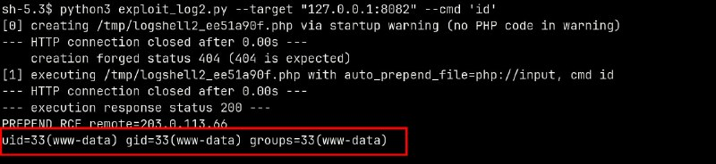

Сейчас ежедневно появляются уязвимости, которые на бумаге звучат очень грозно и опасно. Но важно понимать, когда теоретический импакт отличается от реальной возможности компрометации. Среди потока маловероятных уязвимостей на прошлой неделе появилась CVE-2026-129289. Сегодня поговорим, почему она опасна и как мы смогли сделать ее еще более угрожающей.
Smuggling
CVE-2026-129289 позволяет проводить smuggling FastCGI-запросов в php-fpm. FastCGI — протокол для взаимодействия веб-серверов с приложением, которое обрабатывает запросы. Веб-сервер передает php-fpm по FastCGI данные из HTTP-запроса (метод, путь, заголовки, тело) и другую информацию, требуемую для корректного запуска PHP-скриптов.
Инсталляции Apache, которые используют mod_php, не подвержены данной уязвимости, так как mod_php не использует FastCGI.
Для эксплуатации уязвимости нужно отправить специально сформированный HTTP-пакет, в результате чего php-fpm обработает FastCGI-запрос как два отдельных запроса, причем атакующий имеет полный контроль над содержимым второго запроса.
Как работает smuggling
Root cause уязвимости — ошибка в логике завершения PHP-запроса. После того как PHP-скрипт закончил выполнение, ядро PHP читает остаток тела запроса FastCGI, который был не использован приложением. Это гарантирует, что следующие байты будут относиться к новому запросу FastCGI. Данный код находится в блоке else if и может быть пропущен, если выполняется предыдущее условие, а именно SG(request_info).request_body.
Исправление затрагивает именно данную логику. До:
C++
if (SG(request_info).request_body) {
SG(request_info).request_body = NULL;
} else if (SG(server_context)) {
...
}После:
C++
if (SG(request_info).request_body) {
SG(request_info).request_body = NULL;
}
if (SG(server_context)) {
...
}В случае когда остаток тела не был прочитан, php-fpm в процессе обработки нового запроса получит пользовательские данные, что и приводит к smuggling.
Парсинг запросов
Некоторые парсеры тела запроса, например для application/x-www-form-urlencoded, читают тело полностью. В этом случае непрочитанных данных не остается, поэтому smuggling через них не срабатывает. Для успешной эксплуатации требуется найти способ отправить такой запрос, чтобы тело запроса было прочитано не до конца.
В ходе исследования был обнаружен баг в парсере rfc1867_post_handler (multipart/form-data).
Парсер multipart/form-data использует буфер размером 5120 байт, в который он копирует данные из FastCGI-запроса. После чего пытается распарсить атрибуты name и filename из Content-Disposition:
C++
if (!strcasecmp(key, "name")) {
if (param) {
efree(param);
}
param = getword_conf(mbuff->input_encoding, pair);
...
} else if (!strcasecmp(key, "filename")) {
if (filename) {
efree(filename);
}
filename = getword_conf(mbuff->input_encoding, pair);
...
}В случае если в Content-Disposition не указан ни один из этих атрибутов, парсер принудительно завершает процесс обработки:
C++
if (!param && !filename) {
sapi_module.sapi_error(E_WARNING, "File Upload Mime headers garbled");
goto fileupload_done;
}Таким образом, тело длиннее 5120 байт, в котором атрибуты name и filename не указаны, не будет прочитано полностью при парсинге, а данные, идущие после, будут обработаны как новый запрос FastCGI.
Отметим, что при использовании nginx эксплуатация возможна только с директивой fastcgi_keep_conn on;, иначе nginx разорвет подключение после получения ответа FastCGI на первый запрос. Данная директива часто используется в конфигурации в целях повышения производительности.
Условие SG(request_info).request_body != NULL
Чтобы завершить триггер smuggling, требуется выполнить условие, о котором упоминалось ранее:
C++
if (SG(request_info).request_body) {
SG(request_info).request_body = NULL;
}Чтобы request_body был создан, требуется, чтобы PHP-скрипт взаимодействовал с php://input, но не читал его полностью.
Под такие условия подпадает скрипт со следующей логикой:
PHP
<?php
$body = fopen('php://input', 'r');
?>Логика приложения, где оно работает с телом запроса через php://input, но не читает его полностью, редка, поэтому это значительно сужает границы применимости данной уязвимости.
Итоговая цепочка smuggling выглядит следующим образом:
multipart/form-data читает содержимое неполностью.request_body.request_body != NULL.От smuggling до RCE
При помощи smuggling можно указать параметры FastCGI SCRIPT_FILENAME и PHP_ADMIN_VALUE, где
SCRIPT_FILENAME — путь до исполняемого PHP-файла,
PHP_ADMIN_VALUE — настройки PHP.
При указании в PHP_ADMIN_VALUE значения allow_url_include=1 auto_prepend_file=php://input PHP динамически добавит в начало скрипта содержимое из тела HTTP-запроса, что приведет к произвольному исполнению кода.
SCRIPT_FILENAME должен указывать на существующий PHP-файл, иначе ядро PHP завершит процесс исполнения до добавления в начало пользовательского ввода.
На основе находок, описанных ранее, мы разработали эксплоит, позволяющий удаленно исполнять shell-команды:
RCE без заранее известного пути к PHP-файлу
Проэксплуатировать эту уязвимость можно иначе. Вместо угадывания пути к файлу PHP можно его создать.
Smuggling позволяет контролировать настройки PHP, соответственно, можно переопределить путь к логам: error_log=/tmp/evil.php.
Также требуется вызвать ошибку, например, указав несуществующий путь к директории с сессиями и включив их автоматическое создание:
session.auto_start=1 session.save_path=/tmp/some/path
В результате файл /tmp/evil.php был успешно создан:
Bash
root@b5724567127f:/tmp# cat evil.php
[20-Nov-2026 15:17:17 UTC] PHP Warning: PHP Request Startup: open(/tmp/nonexistent/sess_4fb5c19da1310d518a717e227b466556, O_RDWR) failed: No such file or directory (2) in Unknown on line 0
[20-Nov-2026 15:17:17 UTC] PHP Warning: PHP Request Startup: Failed to read session data: files (path: /tmp/nonexistent) in Unknown on line 0Данный запрос не требует существующего пути в SCRIPT_FILENAME, так как warning записывается в лог раньше обработки пути в SCRIPT_FILENAME.
Шаги эксплуатации:
/tmp/evil.php.allow_url_include=1 auto_prepend_file=php://input в PHP_ADMIN_VALUE.В результате мы разработали эксплоит, который дает произвольное исполнение кода без знания путей на сервере:

RCE через file_get_contents
Предположим, что на сервере есть файл PHP со следующим содержанием:
PHP
<?php
if (isset($_GET['file'])) {
file_get_contents($_GET['file']);
}
?>Он не содержит в себе взаимодействия с php://input, соответственно, предыдущие техники эксплуатации уязвимости к нему неприменимы. Данный код сам по себе уязвим к Arbitrary File Read, однако не позволяет получить RCE (с версии PHP >= 8.0 враппер phar:// отключен по умолчанию). Пользовательский ввод попадает в file_get_contents без экранирования и фильтрации, что дает возможность использовать врапперы, в том числе и php://input.
file_get_contents читает содержимое ресурса до EOF, что означает: smuggling при выполнении file_get_contents("php://input") невозможен.
PHP поддерживает потоковую обработку данных ресурса при помощи врапперов. Например, php://filter поддерживает множество методов для обработки данных, но самым полезным в данной ситуации будет zlib.inflate. Данные zlib разделены на блоки deflate, в каждом из которых есть заголовок, который содержит различную информацию, включая данные о количестве оставшихся блоков (BFINAL). Встретив финальный блок, zlib обрабатывает его и завершает выполнение. Таким образом можно добиться того, чтобы file_get_contents не читал тело запроса полностью.
Итоговый враппер PHP будет выглядеть так:
Ruby
php://filter/read=zlib.inflate/resource=php://inputBash
sh-5.3$ python3 exploit_wrapper.py --target 127.0.0.1:8082 --param file --cmd 'id'
uid=33(www-data) gid=33(www-data) groups=33(www-data)Этот способ эксплуатации уязвимости более применим в реальных условиях, так как распространяется на широкий спектр примитивов. Функция file_get_contents является лишь примером.